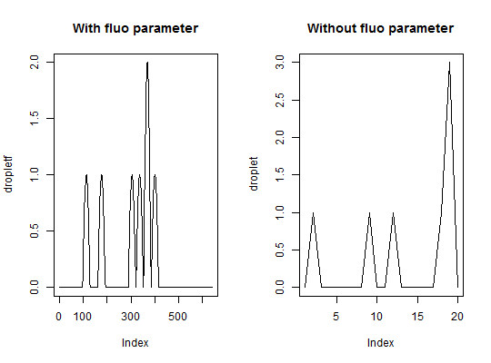

Expands function summary allowing printing summaries
objects of the class adpcr to or
dpcr.
The data frame with estimated values of lambda, m and corresponding confidence intervals.
The function prints a summary of the dPCR reaction, including k (number of positive chambers), n (total number of chambers), estimated lambda and concentration, as well as confidence intervals for the last two variables.
If summary is used on an object containing results of many
experiments, all experiments would be independently summarized. Currently
supported only for objects of class adpcr.
Bhat S, Herrmann J, Corbisier P, Emslie K, Single molecule detection in nanofluidic digital array enables accurate measurement of DNA copy number. Analytical and Bioanalytical Chemistry 2 (394), 2009.
Dube S, Qin J, Ramakrishnan R, Mathematical Analysis of Copy Number Variation in a DNA Sample Using Digital PCR on a Nanofluidic Device. PLoS ONE 3(8), 2008.
# array dpcr # Simulates a chamber based digital PCR with m total number of template molecules # and n number of chambers per plate and assigns it as object ptest of the class # adpcr for a single panel. The summary function on ptest gets assigned to summ # and the result with statistics according to Dube et al. 2008 and Bhat et al. 2009 # gets printed. ptest <- sim_adpcr(m = 400, n = 765, times = 5, dube = FALSE, n_panels = 1) summ <- summary(ptest) #save summary#> #> Number of positive partitions: 310 #> Total number of partitions: 765 #> #> Number of runs: 1 #> Number of experiments: 1 #> #> experiment replicate assay method lambda lambda.low lambda.up m #> Experiment1 1 Unknown dube 0.5195784 0.4627337 0.5798503 397.4775 #> Experiment1 1 Unknown bhat 0.5195784 0.4897353 0.5494215 397.4775 #> m.low m.up c c.low c.up k n #> 353.9913 443.5855 0.5195784 0.4627337 0.5798503 310 765 #> 374.6475 420.3075 0.5195784 0.4897353 0.5494215 310 765print(summ)#> $partitions #> $partitions$k #> [1] 310 #> #> $partitions$n #> [1] 765 #> #> #> $summary #> experiment replicate assay method lambda lambda.low lambda.up m #> 1 Experiment1 1 Unknown dube 0.5195784 0.4627337 0.5798503 397.4775 #> 2 Experiment1 1 Unknown bhat 0.5195784 0.4897353 0.5494215 397.4775 #> m.low m.up c c.low c.up k n #> 1 353.9913 443.5855 0.5195784 0.4627337 0.5798503 310 765 #> 2 374.6475 420.3075 0.5195784 0.4897353 0.5494215 310 765 #> #> $nexper #> [1] 1 #> #> $nrun #> [1] 1 #># multiple experiments # Similar to the previous example but with five panels ptest <- sim_adpcr(m = 400, n = 765, times = 5, dube = FALSE, n_panels = 5)#>#>summary(ptest)#> #> Number of positive partitions: 290, 314, 316, 313, ... #> Total number of partitions: 765, 765, 765, 765, ... #> #> Number of runs: 5 #> Number of experiments: 1 #> #> experiment replicate assay method lambda lambda.low lambda.up m #> Experiment1 1 Unknown dube 0.4765610 0.4226702 0.5335223 364.5692 #> Experiment1 1 Unknown bhat 0.4765610 0.4483108 0.5048112 364.5692 #> Experiment1 2 Unknown dube 0.5284085 0.4709625 0.5893568 404.2325 #> Experiment1 2 Unknown bhat 0.5284085 0.4982405 0.5585764 404.2325 #> Experiment1 3 Unknown dube 0.5328529 0.4751049 0.5941414 407.6325 #> Experiment1 3 Unknown bhat 0.5328529 0.5025217 0.5631842 407.6325 #> Experiment1 4 Unknown dube 0.5261937 0.4688983 0.5869724 402.5381 #> Experiment1 4 Unknown bhat 0.5261937 0.4961071 0.5562802 402.5381 #> Experiment1 5 Unknown dube 0.5217786 0.4647839 0.5822191 399.1607 #> Experiment1 5 Unknown bhat 0.5217786 0.4918545 0.5517028 399.1607 #> m.low m.up c c.low c.up k n #> 323.3427 408.1446 0.4765610 0.4226702 0.5335223 290 765 #> 342.9578 386.1806 0.4765610 0.4483108 0.5048112 290 765 #> 360.2863 450.8579 0.5284085 0.4709625 0.5893568 314 765 #> 381.1540 427.3110 0.5284085 0.4982405 0.5585764 314 765 #> 363.4552 454.5181 0.5328529 0.4751049 0.5941414 316 765 #> 384.4291 430.8359 0.5328529 0.5025217 0.5631842 316 765 #> 358.7072 449.0339 0.5261937 0.4688983 0.5869724 313 765 #> 379.5219 425.5543 0.5261937 0.4961071 0.5562802 313 765 #> 355.5597 445.3976 0.5217786 0.4647839 0.5822191 311 765 #> 376.2687 422.0526 0.5217786 0.4918545 0.5517028 311 765# droplet dpcr - fluorescence # Simulates a droplet digital PCR with m = 7 total number of template molecules # and n = 20 number of droplets. The summary function on dropletf gives the # statistics according to Dube et al. 2008 and Bhat et al. 2009. The fluo parameter # is used to change the smoothness of the fluorescence curve and the space between # two consecutive measured peaks (droplets). dropletf <- sim_dpcr(m = 7, n = 20, times = 5, fluo = list(0.1, 0)) summary(dropletf)#> #> Number of positive partitions: 6 #> Total number of partitions: 20 #> #> Number of runs: 1 #> Number of experiments: 1 #> #> experiment replicate assay method lambda lambda.low lambda.up m #> Experiment1 1 Unknown dube 0.3566749 0.1044315 0.6948217 7.133499 #> Experiment1 1 Unknown bhat 0.3566749 0.2102899 0.5030600 7.133499 #> m.low m.up c c.low c.up k n #> 2.088629 13.89643 0.3566749 0.1044315 0.6948217 6 20 #> 4.205799 10.06120 0.3566749 0.2102899 0.5030600 6 20# droplet dpcr - number of molecules # Similar to the previous example but with five panels but without and modifications # to the peaks. droplet <- sim_dpcr(m = 7, n = 20, times = 5) summary(droplet)#> #> Number of positive partitions: 5 #> Total number of partitions: 20 #> #> Number of runs: 1 #> Number of experiments: 1 #> #> experiment replicate assay method lambda lambda.low lambda.up m #> Experiment1 1 Unknown dube 0.2876821 0.06211724 0.5794127 5.753641 #> Experiment1 1 Unknown bhat 0.2876821 0.15858263 0.4167815 5.753641 #> m.low m.up c c.low c.up k n #> 1.242345 11.58825 0.2876821 0.06211724 0.5794127 5 20 #> 3.171653 8.33563 0.2876821 0.15858263 0.4167815 5 20# Visualize the results of dropletf and dropletf # The curves of dropletf are smoother. par(mfrow = c(1,2)) plot(dropletf, main = "With fluo parameter", type = "l") plot(droplet, main = "Without fluo parameter", type = "l")